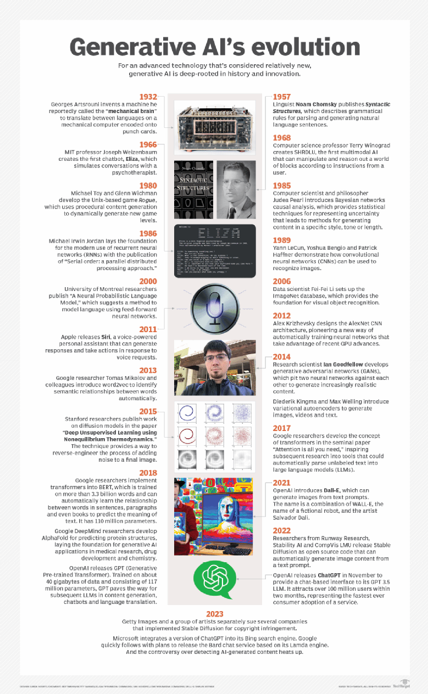

What is Generative AI?

Generative AI refers to a branch of artificial intelligence (AI) that focuses on creating or generating new
data that is similar to, but not exactly the same as, existing data. It involves algorithms and models that are capable of producing original content, such as images, text, music, and even videos, based on patterns and
examples learned from a dataset.
Generative AI techniques often rely on deep learning models, such as generative adversarial networks (GANs),
variational autoencoders (VAEs), and autoregressive models, to generate realistic and novel outputs. These
models learn the underlying structure and characteristics of the input data and then use this knowledge to
generate new data samples.
Generative AI has a wide range of applications, including image and video synthesis, text generation,
content
creation, virtual world generation, and even drug discovery. It is also used in creative fields like art,
music, and storytelling to inspire and augment human creativity.
Types of Generative AI
Generative AI can be categorized into several types based on the underlying algorithms and techniques used. Some
common types of generative AI include:
- Generative Adversarial Networks (GANs)
- Variational Autoencoders (VAEs)
- Autoregressive Models
- Flow-Based Models
- Transformer Models
- Generative Adversarial Networks (GANs):
- GANs consist of two neural networks – a generator and a discriminator – that compete against each other in a
game-like setting. The generator aims to produce realistic data samples, such as images, while the
discriminator tries to distinguish between real and fake samples. Through this adversarial process, GANs can
generate high-quality and diverse outputs.
- Variational Autoencoders (VAEs):
- VAEs are a type of neural network architecture used for unsupervised learning and latent variable modeling.
They consist of an encoder network that maps input data to a latent space and a decoder network that
reconstructs the input data from the latent space representations. VAEs are capable of generating new data
samples by sampling from the learned latent space distribution.
- Autoregressive Models:
- Autoregressive models, such as autoregressive moving average (ARMA) and autoregressive integrated moving
average (ARIMA) models, are statistical models that capture the temporal dependencies within sequential
data. In the context of generative AI, autoregressive models are often used for generating sequences of
data, such as text or time-series data.
- Flow-Based Models:
- Autoregressive models, such as autoregressive moving average (ARMA) and autoregressive integrated moving
average (ARIMA) models, are statistical models that capture the temporal dependencies within sequential
data. In the context of generative AI, autoregressive models are often used for generating sequences of
data, such as text or time-series data.
- Transformer Models:
- Autoregressive models, such as autoregressive moving average (ARMA) and autoregressive integrated moving
average (ARIMA) models, are statistical models that capture the temporal dependencies within sequential
data. In the context of generative AI, autoregressive models are often used for generating sequences of
data, such as text or time-series data.
These are just a few examples of the types of generative AI, and the field continues to evolve with new techniques and architectures being developed over time.